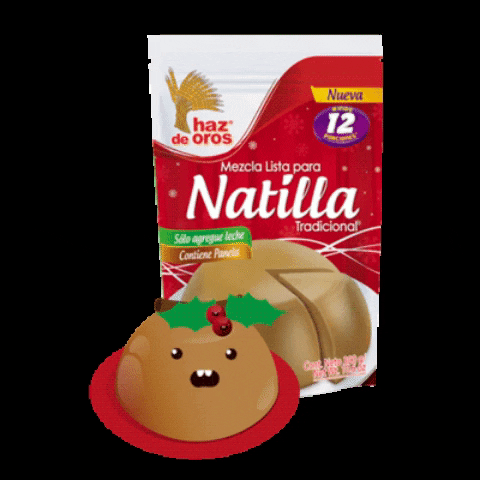

- 1 caja 300g de natilla Cocada Maizena
- 1 1/2 litro de leche descrementada
- 12 unidades de panelitas de Arequipe y Coco Copelia
- 1/2 taza de crema de leche
- 1/4 taza de coco rallado deshidratado
Ingredientes

Pasos
Preparacion
- Triturar las Panelitas de Arequipe y Coco Copelia y reservar.
- En un bowl, agregar la natilla y diluir en 1 litro de leche descrementadafria. Cocinar a fuego medio-alto en un perol mezclando constantemente hasta llegar a punto de hervor.
- Agregar la mitad de la Copelia a la antilla, y cocinar a hervor suave por 5 minutos sin parar de resolver para que se pegue.
- En recipienntes individuales repartir las Copelia restantes.
- Pasados los 5 minutos de coción, retirar la natilla del fuego, agregar la crema de leche y mezclar hasta tener una textura cremosa.
- Servir en los recipientes individuales y finalizar con el coco deshidratado, llevar a refrigeración 3 horas y a disfrutar.
Video de Preparacion
Tabla Nutricional
| Informacion Nutricional | ||
|---|---|---|
Tamaño de porcion:3 Cdas de ezcla seca 30g para una porcion preparada según instrucciones (100 g) Número de porciones por envase: 10 |
||
| Calorias (Kcl) | Por 100g | Por porcion |
| 153 | 153 | |
Grasa Total |
0.7 g |
0.7 g |
Grasa saturada |
0.6 g |
0.6 g |
Grasa trans |
0.0 mg |
0.0 mg |
Carbohidratos totales |
33 g |
33 g |
Fibra dietaria |
0.0 g |
0.0 g |
Azúcares totales |
23 g |
23 g |
Azúcares añadidos |
18 g |
18 g |
Proteínas |
3.6 g |
3.6 g |
Sodio |
47 mg |
47 mg |
Potasio |
166 mg |
166 mg |
Vitamina A |
2.0 ER |
2.0 ER |
Vitamina D |
0.0 |
0.0 |
Hierro |
0.0 |
0.0 |
Calcio |
127 mg |
127 mg |
Zinc |
0.45 mg |
0.45 mg |